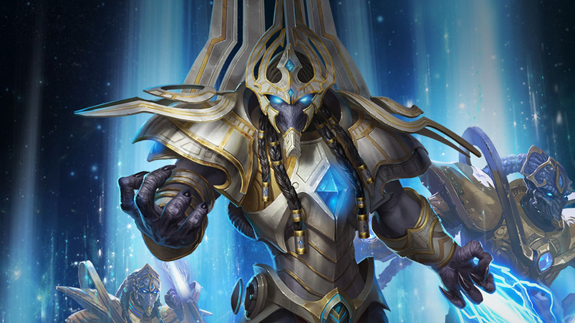
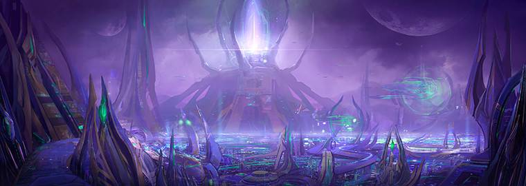
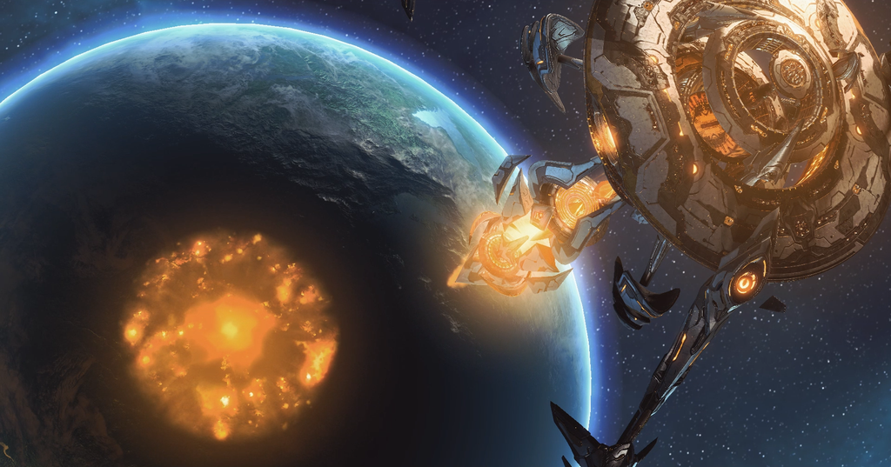
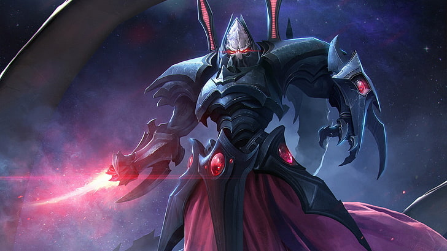

I play a a lot of video games in my free time. its fast, and can be started up faster than the preparation time with something like painting or exercising. The games that i enjoy playing are primarily strategy games. of these strategy games, there are 3 that i enjoy the most.
Starcraft 2 is one of my favorite games that i have played. It's a Real
Time Strategy game made by Blizzard in 2010, with DLC content releasing in
2013 and 2015.
In this game, you select one of 3 races to play:

The Terran's strengths depend on strong static fortresses on defense, and heavy armor supported by hordes of expendable infantry. A standard Terran marine alone cannot do very much, but they are cheap and fast to produce. they can fit in any composition and making an army solely made of marines is a completely viable option.


Even if you have never played starcraft 1 or 2, you have probably heard the term "Zerg" used at some point in another game. Zerg, much like its namesake, employ a tactic of "Everyone is expandable". Your units are, besides a few outliers, fast to produce, fast to move, and fast to die. The goal of someone playing against zerg is to contain them and prevent them from expanding out of control. If you let the Zerg player do anything they want, you are in for a drawn out battle of attrition.


Now for my favorite faction in starcraft, and possibly all of sci-fi, the
Protoss. The protoss have the most advanced technology in the setting, and
use it with deadly efficiency. The basic Zealot alone is durable and able
to withstand heavy punishment. This is a theme which is carried throughout
most of the protoss roster. This is balanced out by units being slower and
more expensive to build. They also have possibly the strongest air units
in the game. A common strategy of Protoss is to Construct a large amount
of gateways to quickly respond to threats, and maxing out their population
with a massive fleet of starships, able to tear armies to shreds under
hails of laser fire.
As an addition, the Protoss also have my favorite varieties of characters.
The Daelaam (known as the unified protoss) are the combination of all the
different groups of protoss. Led by the Heirarch Artanis, they work
together to fight against an ultimate evil. Within the Daelaam, there are
4 primary factions of protoss, each with their own style: The Aiur, the
Nerazim, the Purifiers, and the Tal'Darim.

The first Protoss faction are the Aiur Protoss, also known as the Templar. Aiur is the name of the protoss homeworld, and as such, their design is the baseline for all other protoss. The design of the Templar Protoss is based with a primary of gold, and accents of blue. Their units are versatile and powerful.
Next on the list, we have the Nerazim, also known as the Dark Templar, were founded millenia ago by a group of protoss exiled from their homeworld of Aiur. They specialize in stealth warfare, striking from the shadows and destroying their enemies before they can react. During the events of starcraft 1, a large number of Aiur Protoss worked together with the Nerazim to destroy an existential threat to their species. Since that point, The Aiur and Nerazim protoss had joined together, which would then become known as the Daelaam.
Third, we have the Purifiers, lead by Fenix. The Purifiers were an ancient research project which was sealed away many years ago. They are a legion of Cybernetic warriors, each one a near perfect recreation of a Protoss warrior who fell in battle. Fenix, in particular, was a major character in starcraft 1 who was struck down once as a zealot, reborn as a dragoon, destroyed again, and after this, his personality was transferred into a Purifier body. The purifiers, before they joined with the unified Protoss, were treated awfully. They were seen by the researchers who built them as mere robots, and not brave warriors. After Artanis and his forces fought alongside the Purifiers, the Purifiers were to be treated as equals, and they joined the Daelaam.
Finally, we have the Tal'Darim. The Tal'Darim begin the game as one of the primary antagonists, alongside the Terran "Mobieus Corps" and the Zerg under the control of the dark god Amon. The Tal'Darim strictly follow a policy of might makes right. Each Protoss within the Tal'Darim faction is strictly kept in their place in the heirarchy. If one protoss believes that they are stronger than the Protoss directly above him, he can ascend to their position by a rite of combat, known as Rak'Shir. This exists to ensure that the Tal'Darims leaders are as strong as possible, and their leadership is absolute. Once the Daelaam had fought to have one of the their Tal'Darim "allies" placed on the throne of the faction, Alarak, the new Highlord of the Tal'Darim fought alongside the Daelaam to the end of the war, but never truly integrated with them.
